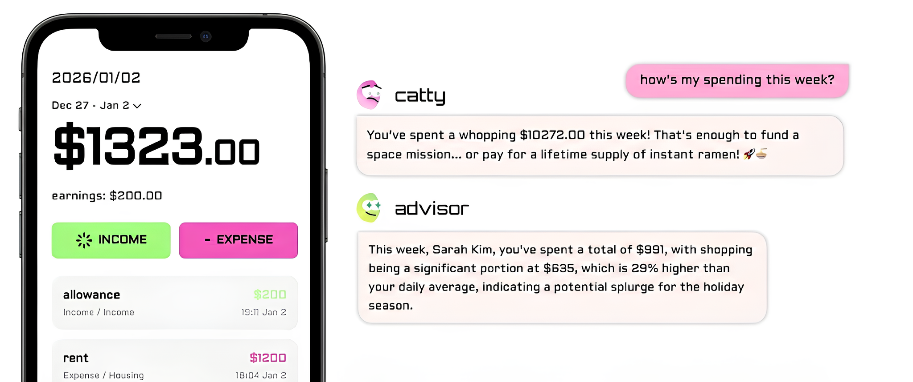
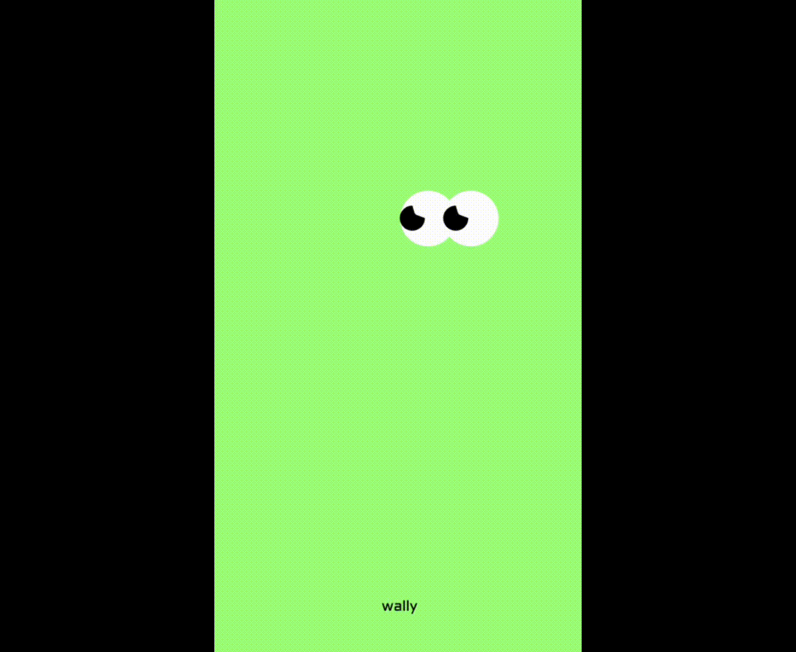

Research
Research showed that the core problem wasn't data availability—but interpretation and action.
Challenges in Personal Finance Management
Source: Academy Bank, 2025
Wally
Platform
Web / Mobile App
Role
Product Designer · UX/UI Designer
Timeline
Oct 2025 – Dec 2025
Team
2-person team (Product/UX + Engineering)
Tools
Figma, Next.js, VS Code, Github

Why does awareness of spending
not always translate into behavior change?
Wally is an AI-driven personal finance platform designed to help users change spending behavior, not just track expenses.
While most budgeting apps focus on dashboards and transaction logs, Wally reframes budgeting as a behavioral and emotional problem. By combining conversational AI with insight-driven reports, Wally helps users understand why they overspend and how to intervene—before overspending becomes habitual.

Research showed that the core problem wasn't data availability—but interpretation and action.
Source: Academy Bank, 2025
If users receive emotionally aware, goal-based feedback at the right moment, they will be more likely to change spending behavior.
”✓Replaces static dashboards with a conversational coaching flow.
✓Adapts tone through different AI personas (supportive, direct, playful).
✓Turns spending data into clear, actionable guidance tied to user goals.
✓Lets users set a target amount and timeframe to define “success.”
✓Generates a daily goal and visualizes whether users stayed within it.
✓Summarizes progress and distribution at a glance for fast reflection.
✓Connects emotional states to spending behavior to reveal hidden patterns.
✓Surfaces triggers behind impulsive purchases in human-friendly language.
✓Converts insights into nudges users can act on in the moment.
To evaluate how users perceived Wally after hands-on use, I conducted a user survey focused on clarity, usefulness, and behavioral impact.
Users consistently praised the app for providing specific and practical spending advice, rather than generic financial tips. This reinforced the decision to position Wally as a behavioral coaching tool, not a passive tracker.
Participants described the UI as “cute” and engaging, noting that the friendly visual tone made the experience feel less judgmental and more motivating—supporting long-term engagement.
78% of users reported that the AI characters helped them better control their spending. This validated the concept of using AI personas to deliver emotionally aware, supportive feedback instead of static reports.
While users appreciated the tone, several mentioned that AI responses could feel noisy or overly verbose, highlighting the need for more concise, scannable explanations.
Users wanted additional and more granular categories, suggesting opportunities for category expansion and customization.
Some participants were unsure how to fully use certain features, pointing to the need for lightweight onboarding cues and micro-copy guidance.
Period: Dec 1, 2025
Participants: 5 users
Method: Open card sorting focused on report page structure and feature comprehension

The report page became the core reflection and decision-making moment. Based on card sorting findings, I redesigned the structure to improve clarity and reduce cognitive load.
Before:
After:


지출 입력
This flow is designed as a core experience that allows users to quickly log their spending immediately after logging in, while also capturing their emotional state at the moment of purchase. With minimal input, users select the expense amount and category, and are gently prompted to record their mood so the process doesn’t stop at numbers alone. As a result, each expense is stored not just as a financial record, but as a personal log that connects spending with context and emotion. This flow lowers the friction of daily logging, while helping users later reflect on their habits—not in terms of how much they spent, but in what state of mind they were in when making those spending decisions.



Mood
Mood tracking helps users recognize emotional patterns behind spending, so reflection happens with context—not just numbers.

AI Chat
AI chat provides supportive, goal-based coaching in context, turning insights into next steps users can act on.
Catty
A brutally honest friend who calls out your spending habits with sharp, witty commentary—especially when your category spending gets out of hand.
Future Me
Your future self who shows how today’s small spending choices shape your long-term financial reality, speaking from experience (and a little regret).
Advisor
A data-driven guide who analyzes patterns, budgets, and timelines to give clear, practical advice you can actually act on.
Web UI
The web experience mirrors the core journey—from goal setting to home overview to report review—optimized for quick scanning and clarity.


This project reinforced that lasting behavior change is driven by clarity, timing, and emotional framing—not by more features. In financial products especially, trust is a UX and language problem, where microcopy and tone shape whether users feel supported or judged. It also reminded me that strong information architecture can guide behavior more effectively than feature count by making the right next step obvious at the right moment.
Designing behavior change requires aligning psychology, system constraints, and timing—not just good UI. Wally strengthened my belief that strong product design sits at the intersection of human psychology, product strategy, and technical constraints.